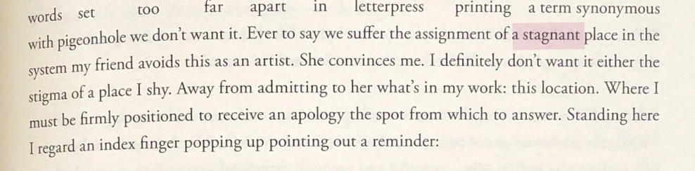

In Whereas, Layli Long Soldier states that her work is a formal, sentence-bound form of poetry, mimicking the bureaucratic language and formality used by the U.S. government in their official works and apologies.
By adopting this format, she exposes the inadequacies and contradictions within these statements, using the constraints of language to showcase the limitations of institutional apologies.
In that same introduction, Long Soldier subtly breaks the formal structure she adopts, mirroring how the U.S. government promises one thing but delivers another.
This intentional disruption highlights the government’s hypocrisies and the disconnect between their words and actions.

Layli Long Soldier introduces the concept of being pigeonholed to highlight how Native Americans are often reduced to narrow, stereotypical portrayals, limiting the diversity as well as the complexity of Native identities. She describes this pigeonholing as a “stagnant place,” where Native Americans are confined to a static role within the ‘new world’s’ system, expected to remain within predetermined boundaries and preconceived identities, unable to break free from the constraints imposed by the system.
Layli Long Soldier introduces a character who acts as the polar opposite of these stereotypes, someone who critiques and questions Native identity from within—further revealing how these restrictive narratives constrain and distort the lived experiences of Native communities.
This image is a stark juxtaposition to the stereotypes imposed on Native people, who are often portrayed as being physically strong yet battling issues like alcoholism and unemployment on reservations. The man’s work-weary lips contrast sharply with the stereotype of Native Americans as jobless, and his casual attire—short sleeves and khakis—signifies a level of acceptance and normalcy that is often denied to Native people. The man’s seamless entry into the conversation further highlights this disparity, as it emphasizes his inherent privilege to participate without being pigeonholed or judged based on preconceived notions of his identity.
Slight Critique
I wish she held our hand a bit less. I understand why she did, but I believe it would be a better fit to mimick the American giverment and make it the job of the reader to already have the knowledge or go and do the research in tandem with reading the paper.